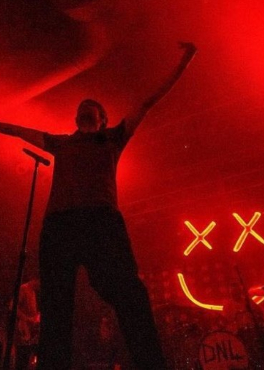
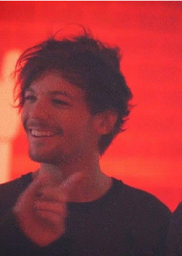
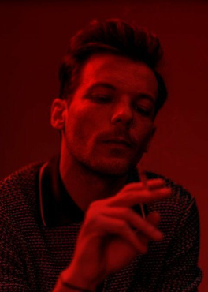
Show em Londres, 14 de fevereiro de 2020Louis Tomlinson em 2015Fotos promocionais de "Back To You"
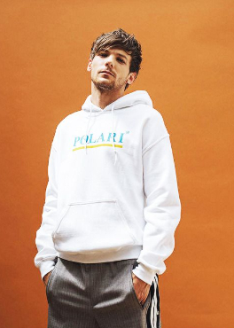
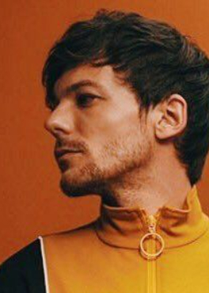
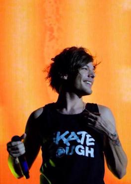
Louis Tomlinson para Polari em 2018Louis Tomlinson para revista em 2018Show da One Direction em 2015
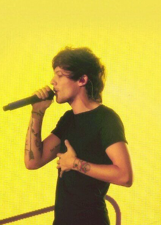
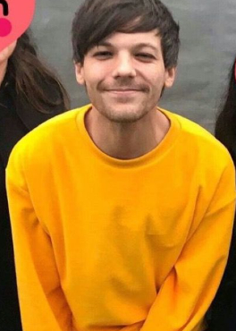
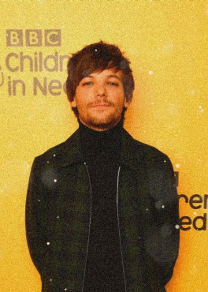
Performance de "Steal My Girl" em 2014Foto tirada com fãs em 2019Foto em evendo da BBC em 2018
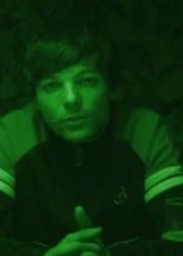
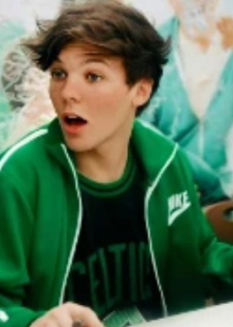
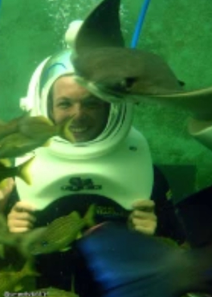
Clipe de "Don't Let It Break Your Heart"Meet and Great de Up All Night em 2012Miami Seaquarium 2012